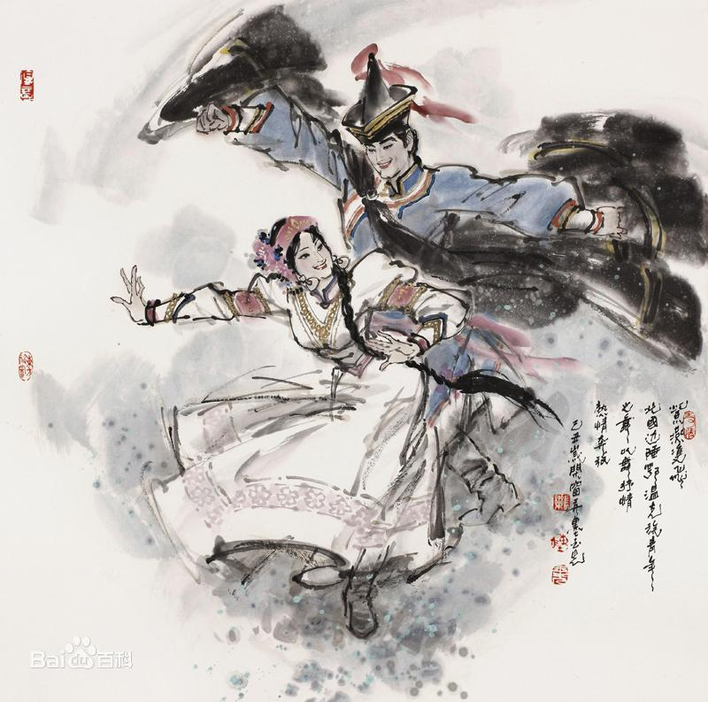

- 民族简介
- 文化习俗
- 历史发展
- 旅游介绍
鄂温克族
鄂温克族 鄂温克族（俄语：Эвенки，旧称通古斯或索伦）是东北亚地区的一个民族，主要居住于俄罗斯西伯利亚以及中国内蒙古和黑龙江两省区，蒙古国也有少量分布。在俄国被称为埃文基人。 鄂温克是鄂温克族的民族自称，其意思是“住在大山林中的人们” 。 鄂温克民族的语言文化具有独特性，属阿尔泰语系之通古斯语族北语支，在日常生活中，鄂温克人多数使用本民族语言，没有本民族的文字 。鄂温克牧民大多使用蒙古文，农民则广泛使用汉文 [2] 。 鄂温克人是从游牧发展到定居的，从事畜牧业生产方式的人群。他们的传统文化具有极大的丰富性，最为突出的是服饰文化知饮食文化 。
“鄂温克”，是鄂温克族的民族自称，其意思是“住在大山林中的人们”。历史上，由于居住地域的关系，鄂温克人对大兴安岭一带的大山林，包括外兴安岭至阿玛扎尔河、勒拿河上游等地域统称“额格都乌日”或“额格登”（鄂温克语意“大山”）。另外还有一种说法：“鄂温克”的意思是“下山的人们”或“住在南山坡的人们”。上述两种解释都说明鄂温克人是大山林中的狩猎民族。而随着历史的发展，有一部分走出山林迁居草原和河谷平原地带，有一部分依旧留在山林。“鄂温克”这一称呼，反映了鄂温克族与山林有着密切联系的古老历史和生活 。">
信仰
过去，鄂温克族多信萨满教，牧区的居民同时信喇嘛教。1945年前还保留有动物崇拜、图腾崇拜和祖先崇拜等残余，部分氏族以鸟类和熊等为图腾崇拜对象。各氏族或大家族有巫师“萨满”，多由头人（酋长）担任 。
建筑
鄂温克族人在森林中没有固定的住所，“撮罗子”是 他们的传统民居。“撮罗子”，鄂温克语叫“希椤柱”，它的外形如同鄂伦春族的“斜人柱”，高约3米，直径约4米，是一种圆锥形建筑物，实际上是用松木杆搭成的圆形窝棚，也是一种非常简单的帐篷。“撮罗子”的遮盖物随季节变化有所不同，夏季一般用桦树皮，冬季则用麂、鹿皮包裹。鄂温克族人虽无固定住所，却有固定建筑，那就是他们的仓库。他们的仓库极为奇特：先将相邻的两棵大树砍去树梢，作为柱子，然后用木头垒成一间悬空的仓库，地上斜竖一根砍有阶梯的木柱为梯。仓库中存放食品、猎物、衣服、用具等，他们从不上锁，其他猎人可任意取用，事后如数归还即可 。 牧区主要的住房是“蒙古包”，圆形。夏天以苇子、柳条或桦皮围盖。冬季，穷苦人家仍以苇子为包盖，富裕人家则以毡子围盖。 靠近山区的贫困人家住的是矮小、潮湿的“马架子”（土坯盖成） 。
服饰
鄂温克族的传统服装以皮制为多。用狍皮、（犭+罕）皮、鹿皮、羊皮等制作冬季长袍、裤子、套裤、靴子、帽子、手套、袜子等。妇女的衣袍以布制的为主，在农区衣袍要镶边衬里，穿长袍时外面罩长、短坎肩。敖鲁古雅鄂温克族妇女穿连衣裙，衣领较大，加白、黑、红色领边。前面对襟。陈巴尔虎旗鄂温克族妇女冬夏都穿连衣裙、上身较窄，下身裙部多褶宽大。已婚妇女的衣袖上缝有一寸来宽的彩布绕袖、穿有彩色布镶边的坎肩。男子的帽子呈圆锥形。顶部有红缨穗，多以蓝布为面，夏季为单布帽，冬帽用羔皮、水獭皮或猞猁皮制作。鄂温克人的皮手套多种多样，其中5指手套缝有美丽图案，很是精制。用狍、（犭+罕）腿皮做的靴子，美观、防潮、轻便、耐磨，适于在山林雪地上行走 。
饮食
居住在北部大兴安岭原始森林里的鄂温克族，完全以肉类为日常生活的主食，吃罕达犴肉、鹿肉、熊肉、野猪肉、狍子肉、灰鼠肉和飞龙、野鸡、乌鸡、鱼类等，食用方法也与牧区略有不同，其中罕达犴、鹿、狍子的肝、肾一般都生食，其他部分则要煮食 。 纯畜牧业生产区的鄂温克族以乳、肉、面为主食，每日三餐均不能离开奶茶，不仅以奶茶为饮料，也常把奶茶加工成酸奶和奶制品。主要奶制品有：稀奶油、黄油、奶渣、奶干和奶皮子。最常见的吃法是将提取的奶油涂在面包或点心上食用 。 鄂温克族传统炊餐用具别具特色，有用罕达犴骨做成的杯子、筷子，鹿角做成的酒盅，犴子肚盛水煮肉、罕达犴筋缝制的鹿皮盛粮口袋，桦木、皮制的各种碗、碟等。如今瓷、铝、铁、塑料制品已广为使用 。 鄂温克族吃饭时，全家人围绕火堆席地而坐，在三角架上吊着铁锅，将捕获的驼鹿或其它猎物切成肉块，放入沸滚的锅里涮着吃。涮出的兽肉多挂着缕缕血丝，半生半熟。人们认为这样吃不仅营养丰富，而且容易吸收 。 剩余的大量兽肉，鄂温克人晾晒成肉干和肉条，贮存起来慢慢吃，外出狩猎时，把它装在鹿包兜里当干粮。 肉类以牛羊肉为主。过去每户每年平均要食用二十来只羊和两头牛。冬季到来之前是鄂温克族大量宰杀牲畜储存肉类的季节。食肉的方法有：手把肉、灌血肠、熬肉米粥和烤肉串等 。
历史
鄂温克族族源由于资料较少，学术界说法不一。主要有室韦说及靺鞨安居骨部说。
1983年内蒙古人民出版社出版的《鄂温克族简史》认为，早在公元前2000年，即铜石器并用时代，鄂温克族的祖先就居住在外贝加尔湖和贝加尔湖沿岸地区 。 据考古发掘，在色楞格河左岸上班斯克村对面的佛凡诺夫山上发现一个人体骨骼，其衣服上带着数十个闪闪发光的贝壳制的圆环，圆环所在位置与鄂温克人胸前所戴串珠以及萨满巫师的法衣上缀饰的贝壳圆环的位置完全一样。此外，还发现死者的一些白玉制的大圆环，与17至18世纪鄂温克人古代服装上的圆环毫无差别。由此证明，最迟在铜石器并用时代，鄂温克人的祖先已居住在贝加尔湖一带 。 在鄂温克族的传说中，认为他们的故乡是勒拿河，勒拿河很宽，连啄木鸟也飞不过去。说勒拿河一带有“拉穆”湖（即贝加尔湖），有八条大河流入湖中。湖的周围有很高的山，鄂温克人的祖先是从“拉穆”湖周围的高山上起源的。另一个传说，说鄂温克人的故乡是黑龙江上游石勒喀河一带 。
唐宋元时期 北魏时期的室韦，特别是其中的北室韦、钵室韦以及唐朝的鞠部，与鄂温克族的族源有着密切的关系，同时也与中原王朝保持着往来关系。据史书记载，北室韦、钵室韦以“射猎为务，食肉衣皮，凿冰没水中而网鱼鳖”，用桦树皮盖屋，使用滑雪板，实行风葬等习俗，正是鄂温克族早期生活的写照。唐朝在后贝加尔地区设立幽陵都督府管辖拨野古、鞠部。辽朝建立以后，其疆域北至外兴安岭，西北至贝加尔湖地区，曾设立室韦大王府和节度使节制这一广大区域内的民众，从而将鄂温克族先民纳入自己的统治之下。金朝的上京道蒲与路，辖境北达外兴安岭“火鲁火疃”（沟城之意）谋克，其统治范围已延伸到鄂温克族祖先的世居之地 。 元代史籍把居住在贝加尔湖以东、广大黑龙江流域的鄂温克、鄂伦春、蒙古等族都称作“林木中百姓”。他们以射猎为业，衣兽皮，住桦皮屋，饲养驯鹿，使用名叫“察纳”的滑雪板往来于山林之中，处于原始的渔猎经济时代。1207年，成吉思汗派长子术赤征伐林木中的百姓。1235年，窝阔台汗在黑龙江上游地区设开元路、河宁路，以统辖林木中的百姓 。
明清时期 1480年，明军占领元朝的岭北行省所在地和林，并在外贝加尔湖以及黑龙江流域先后设置卜鲁丹河卫、乞塔河卫等卫所，管辖当地民众。在明代的文献中，鄂温克人被称为“北山野人”或“野人女真” 。 明末清初的鄂温克族共分为三大部分：其一是居住于由石勒喀河至精奇里江一带的索伦部，这是鄂温克人当中人数最多的一部分。有杜拉尔、敖拉、墨尔迪勒、卜喇穆、涂克冬、纳哈他等几个大氏族。他们与达斡尔人杂居，在黑龙江中游北岸建立了不少木城和村屯，其酋长是博木博果尔。其二是索伦别部，是贝加尔湖以东赤塔河一带的“使马部”，又称“喀木尼堪”（布里亚特蒙古人的称呼，意思是内部非常团结的人）或“纳米雅尔”或“那妹他”，共有旧纳米雅尔、新纳米雅尔、托空窝儿等15个氏族，其氏族首领有根特木尔等。其三是“使鹿部”，分布于贝加尔湖以西，勒拿河支流威吕河和维提姆河一带。共有12个大氏族，酋长是叶雷、舍尔特库等 。
1633-1634年间，满族统治者取代明朝对“索伦部”的统治。1635年又征服了贝加尔湖地区的“喀穆尼堪”；1639-1640年最后统一了贝加尔湖以东的索伦部地区 。 清朝将鄂温克族以氏族为单位编成“佐”，选拔了佐领等官职，每年向清朝纳贡貂皮。17世纪中叶以后，由于沙俄的侵略，清朝将鄂温克族迁到了大兴安岭地区嫩江流域居住。1732年，清朝从布特哈地区抽调1600多名鄂温克族兵丁，携带家属迁至呼伦贝尔草原地区，驻守边防。这部分人便是后鄂温克族自治旗的鄂温克族 。
17世纪中叶，沙俄侵入我国黑龙江流域，烧杀掳掠，无恶不作，激起了鄂温克等各族人民的无比愤怒和坚决抵抗。1651年，沙俄匪徒侵占黑龙江上游鄂温克族聚居区，鄂温克族人民奋起英勇反抗，他们用弓箭向火器犀利的沙俄侵略者展开了坚决的斗争。1664年，鄂温克族与当地蒙古族居民围攻了盘踞在尼布楚的沙皇匪徒，沉重地打击了沙俄侵略者 。
近现代时期 1931年“九·一八”事变后，日本帝国主义侵占了中国东北地区。鄂温克族人民进行了英勇斗争。他们参加抗日联军，用各种方式打击日本侵略者。抗日战争胜利后，鄂温克族青年知识分子积极参加革命，各地群众参加中国共产党领导的人民武装，还参加了辽沈战役、解放西南的战斗 。 1957年统一民族名称为鄂温克，1958年8月1日日成立鄂温克族自治旗 。
红花尔基森林公园
红花尔基森林公园红花尔基森林公园位于内蒙古呼伦贝尔市鄂温克旗境内，是一个著名的旅游景区。这里不仅有全国惟一、亚洲最大的沙地樟子松原始森林，而且河流纵横、湖泊遍布、物种资源丰富、动植物种类繁多，并与广袤的鄂温克草原、巴尔虎草原毗邻。红花尔基七大景点分布在秀美的青山绿水之间，森林旅游、生态旅游、探险旅游是游客认识自然、享受自然的最佳旅游方式。红花尔基森林公园一期工程已竣工，望海楼、林中湖、蒙古包群、别墅群、狩猎场、射击场、樟子松林七大景点分布在秀美的青山绿水间。同时可为游人提供“行、住、食、游、娱、购”等方面的优质服务。红花尔基森林公园位于内蒙古呼伦贝尔盟鄂温克族自治旗红花尔基镇南2公里，依托全国最大的沙地樟子松原始森林生态系统和广袤的鄂温克、巴尔虎草原开辟丰富的旅游休闲、度假、科学考察等旅游线路，是距离海拉尔最近的森林旅游度假区，乘车2小时可达公园，海拉尔民航每周一、二、四、日共八个航班往返于海拉尔北京之间；铁路交通也十分便利，由海拉尔乘1304次、k278次可达北京返回时乘1303次、k277次，且每日开通，301国道，滨州铁路从海拉尔经过。
红花尔-家森林公园始建于2000年,它位于大兴安岭西麓、呼伦贝尔市鄂温克自治旗南端、与内蒙古红花尔基樟子松自然保护区相接壤，北邻呼伦贝尔大草原，西南与阿尔山市、蒙古人民共和国毗邻。这里距呼伦贝尔市所在地海拉尔区120公里，是集休闲娱乐、观光度假、科普探险、野营狩猎等多功能为一体的大型国家森林公园。红花尔-家森林公园总面积6726公顷，以四季常青的沙地樟子松系统和浩瀚无垠的草原湿地景观为主，兼有连绵逶迤的冈峦山岭、风光旖旎的湖光山色、银装素裹的北国冰雪、丰富多彩的民族风情等景观资源。这里有亚洲最大、我国唯一集中连片的沙地樟子松林带，樟子松现为国家二级珍贵保护树种，以其特有的防风固沙、抗旱、耐贫瘠等特点为业内人士所关注，具有较高的科研和观赏价值。加之这里林区有秀美的山川，丰富的动植物群落，公园已成为呼伦贝尔热点旅游景区。按照整体规划红花尔-家森林公园划分为三大功能区，翠月湖森林度假以翠月湖为中心布设若干游览游乐景点和项目，并辅之以人文景观和接待必需设施，体现了公园的主体风貌和功能，草原湿地科普区体现了公园的水景景观，森林狩猎区体现了公园的探险、狩猎功能。